Compendium
De recherche 17/2022
Dans un contexte d’accélération des changements climatiques et du développement socio-économique dans les régions arctiques et subarctiques, Sentinelle Nord contribue à générer le savoir nécessaire pour comprendre et suivre la transformation des milieux nordiques, du microbiote aux écosystèmes, et s’y préparer. Les initiatives de Sentinelle Nord sont déployées en fonction des axes de recherche prioritaires et dans une perspective inter- disciplinaire. À travers cinq grandes thématiques, ce compendium présente les premières étapes franchies vers cette direction au cours de la phase 1 de Sentinelle Nord (2017-2022).
Seciton 2
Seciton 3